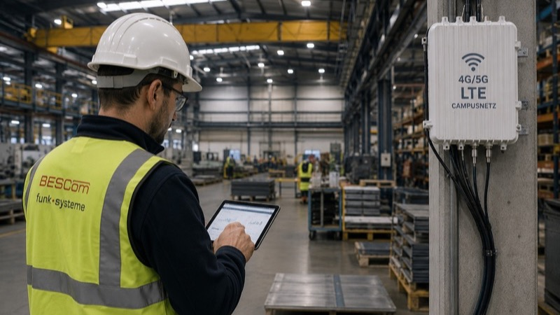

Kein Empfang in der Lagerhalle, abbrechende Verbindungen zwischen Kränen und Leitstand, Sensordaten, die über fremde Server laufen: Der öffentliche Mobilfunk stößt auf Industriearealen täglich an seine Grenzen. Immer mehr Hamburger Unternehmen ziehen daraus die Konsequenz – und bauen ihr eigenes Netz.
Das Problem mit dem öffentlichen Netz
Öffentliche Mobilfunknetze sind für Verbraucher optimiert, nicht für Industrieprozesse. Der Netzbetreiber entscheidet über Ausbau und Priorisierung – nicht Sie. In Stahlbauhallen und zwischen Containerstapeln bleibt die Versorgung lückenhaft, bei Großveranstaltungen oder Störungen bricht die Kapazität ein. Und jedes Byte Ihrer Betriebsdaten verlässt das Firmengelände.
Was ein Campusnetz ist
Ein LTE-Campusnetz ist ein privates Mobilfunknetz auf Ihrem Betriebsgelände: eigene Antennen, eigener Netzkern, eigene Frequenzen. Die Bundesnetzagentur vergibt dafür seit 2019 lokale Frequenzen im Bereich 3,7–3,8 GHz direkt an Unternehmen. Sie betreiben damit Ihr eigenes Netz – unabhängig von jedem Provider, auf Wunsch 5G-fähig.
Die fünf entscheidenden Vorteile
Garantierte Abdeckung: Das Netz wird für Ihr Gelände geplant – jede Halle, jeder Kran, jedes Untergeschoss. Funklöcher gibt es nur dort, wo Sie keine Versorgung brauchen.
Datenhoheit: Alle Daten bleiben im Haus. Für Betriebe mit sensiblen Prozessdaten oder Compliance-Anforderungen ist das oft das ausschlaggebende Argument.
Planbare Latenz: Fahrerlose Transportsysteme, Fernsteuerung und Automatisierung brauchen konstant niedrige Reaktionszeiten. Im eigenen Netz bestimmen Sie die Auslastung – nicht tausende fremde Teilnehmer.
Volle Kontrolle: Sie priorisieren, welche Anwendung Vorrang hat. Kritische Steuerdaten gehen vor, der Besucher-Traffic hinten an.
Zukunftssicherheit: Die Infrastruktur wächst mit – vom LTE-Start bis zum 5G-Ausbau, von zehn Endgeräten bis zu tausenden Sensoren.

Typische Einsatzszenarien
Im Hamburger Hafen vernetzen Campusnetze Umschlaggeräte, Fahrzeuge und Terminals über Flächen, die kein WLAN zuverlässig abdecken könnte. In der Produktion tragen sie Maschinendaten, mobile Bediengeräte und fahrerlose Transportsysteme. In der Logistik verbinden sie Scanner, Stapler und Hoftore – nahtlos vom Außenlager bis in den Tiefkühlbereich. Überall dort, wo WLAN an Reichweite, Roaming oder Störanfälligkeit scheitert, spielt LTE seine Stärken aus.
Der Weg zum eigenen Netz
Der Aufbau ist planbarer, als viele erwarten: Bedarfsanalyse und Funkplanung, Frequenzbeantragung bei der Bundesnetzagentur, Installation von Antennen und Netzkern, Inbetriebnahme und Test. BESCom begleitet alle Schritte aus einer Hand – inklusive des laufenden Betriebs und der Wartung. Für viele Mittelständler ist das eigene Netz damit keine Frage des „ob" mehr, sondern des „wann".
Warum nicht einfach WLAN?
Die häufigste Gegenfrage in Beratungen: „Wir haben doch WLAN – reicht das nicht?" Für Büros ja, für Industrieareale meist nicht. WLAN-Zellen sind klein, das Roaming zwischen Access Points unterbricht Verbindungen – fatal für fahrende Geräte wie Stapler oder fahrerlose Transportsysteme. Auf Freiflächen zwischen Hallen und Containern bräuchte man eine unwirtschaftliche Dichte an Access Points, und die genutzten Frequenzen sind unlizenziert: Jeder Nachbarbetrieb funkt dazwischen.
LTE arbeitet dagegen mit lizenzierten, exklusiven Frequenzen, deutlich größeren Funkzellen und unterbrechungsfreiem Zellwechsel. Ein einziger LTE-Standort deckt ab, wofür Dutzende Access Points nötig wären. In der Praxis ergänzen sich beide Welten: WLAN in Büro und Sozialräumen, das Campusnetz für Produktion, Logistik und Außenflächen.
Was kostet ein Campusnetz?
Die Einstiegshürde ist niedriger als vielfach angenommen. Die Frequenzzuteilung der Bundesnetzagentur kostet für ein typisches Betriebsgelände oft nur wenige hundert bis wenige tausend Euro über die gesamte Laufzeit – die Gebühr richtet sich nach Fläche, Bandbreite und Dauer. Die eigentliche Investition liegt in der Netzinfrastruktur: Antennen, Basisstationen und Netzkern beginnen für kompakte Areale im mittleren fünfstelligen Bereich; große Hafen- oder Werksgelände liegen entsprechend darüber.
Dem gegenüber stehen wegfallende Kosten: keine SIM-Vertragskosten je Gerät beim öffentlichen Anbieter, weniger WLAN-Infrastruktur, weniger Ausfallzeiten durch Funklöcher. Für Betriebe mit hoher Gerätezahl und automatisierten Prozessen amortisiert sich das eigene Netz häufig innerhalb weniger Jahre.
Ein Wort zur Technik-Auswahl: Nicht jedes Campusnetz braucht von Anfang an 5G. Für die meisten heutigen Anwendungen – Scanner, Telemetrie, mobile Terminals, Sprachdienste – ist LTE vollkommen ausreichend und deutlich günstiger. Die Frequenzzuteilung der Bundesnetzagentur gilt technologieneutral, und moderne Netzkomponenten lassen sich später auf 5G aufrüsten. Wer heute mit LTE startet, verbaut sich also nichts – er verschiebt nur die Mehrkosten auf den Zeitpunkt, an dem Anwendungen wie Echtzeit-Fernsteuerung oder Massensensorik sie tatsächlich rechtfertigen. Genau diese Ausbaustrategie erarbeiten wir mit unseren Kunden in der Bedarfsanalyse.
Fazit
Private LTE-Campusnetze geben Hamburger Unternehmen das, was der öffentliche Mobilfunk nicht bieten kann: garantierte Abdeckung, Datenhoheit und planbare Leistung auf dem eigenen Gelände. Ob sich ein Campusnetz für Ihren Standort rechnet, klärt eine kostenlose Ersteinschätzung – sprechen Sie uns an.
BESCom prüft kostenlos, ob sich ein privates LTE-Campusnetz für Ihr Gelände rechnet – von der Frequenzbeantragung bis zum laufenden Betrieb aus einer Hand.